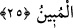

24. Ki o gün dilleri, elleri ve ayakları onların yaptıklarına şâhidlik edecektir.
“Ki o gün” kendi irâdeleri olmaksızın “dilleri, elleri ve ayakları onların
yaptıklarına şâhidlik edecektir.” Şâhidlik, gözün veya basîretin görmesi/müşâhedesi
ile elde edilen bir bilgiye dayanan sözdür.
“
” ifâdesinin fâilden önce getirilmesi bu şâhidliğin onlar için zarar verici
olduğunu çabucak bildirmek içindir.
Dillerinin şâhidliği, onların ağızlarına mühür vurulmadan önce olacaktır. Onun için bu
âyet ile “O gün onların ağızlarını mühürleriz.” (Yâsîn, 36/65) âyeti arasında bir
çelişki yoktur.
Her organ sadece kendileri vâsıtasıyla yapılan suçları değil, sâhibinden sâdır olan
tüm kötü amelleri haber verecektir.
25. O gün Allah onlara gerçek cezâlarını tastamam verecek ve onlar Allah’ın
apaçık gerçek olduğunu anlayacaklardır.
“O gün Allah onlara gerçek cezâlarını tastamam verecek”
“
” bir şeyi tam olarak cömertçe kendi isteğiyle vermektir. “
” tamamlığa
ulaşan demektir. “
” cezâ/karşılık demektir. Yâni onların kötü amelleri âzâları
tarafından haber verildiği gün Allah Teâlâ onlara hak ettikleri cezâlarını tam ve eksiksiz
olarak verecektir.
“Ve onlar” âhiretin korkunç hâllerini ve sıkıntılarını gördükleri zaman “Allah’ın
apaçık gerçek” yâni hak olduğu zâhir “olduğunu anlayacaklardır.” Çünkü O, dünyada
onlar için hazırladığı cezânın hak olduğunu kendilerine açıklamıştı. ‘Allah’ın söylediği
hakkın ta kendisidir’ denir.
Bu âyetlerden (23-25) şu hükümler çıkarılabilir:
1- Lânete lâyık olana lânet etmek câizdir. İmam Gazzalî (r.h.) şöyle demiştir: “Lânet
etmeyi gerektiren üç sıfat vardır: Küfür, bid‘at ve fâsıklık. Bunlardan her biri için
lânetin üç mertebesi vardır:
Birincisi, ‘Allah’ın lâneti kâfirlerin, bid‘atçıların ve fâsıkların üzerine olsun.’ demek
gibi genel bir niteleme ile lânet etmek.
İkincisi, ‘Allah’ın lâneti Yahûdîlerin, Hristiyanların veya Kaderiyye’nin, Hâricîlerin,
Râfizîlerin ya da zinâkârların, zâlimlerin, fâiz yiyenlerin üzerine olsun.’ demek gibi
daha özel vasıflarla lânet etmek. Bütün bunlar câizdir. Fakat bid‘atçıların bazı
guruplarına lânet etmekte tehlike vardır. Çünkü bir şeyin bid‘at olup olmadığını tanımak
kolay bir iş değildir. Dolayısıyla hakkında sahih nakil bulunmayan şeyler hakkında